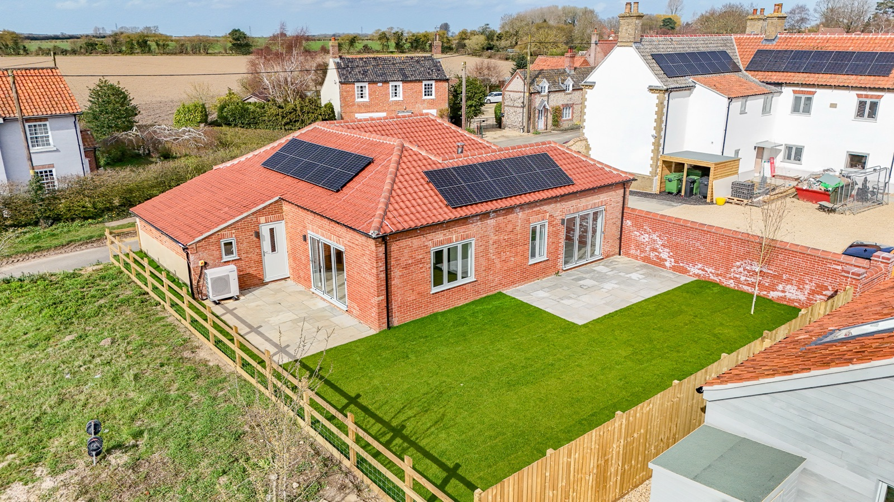
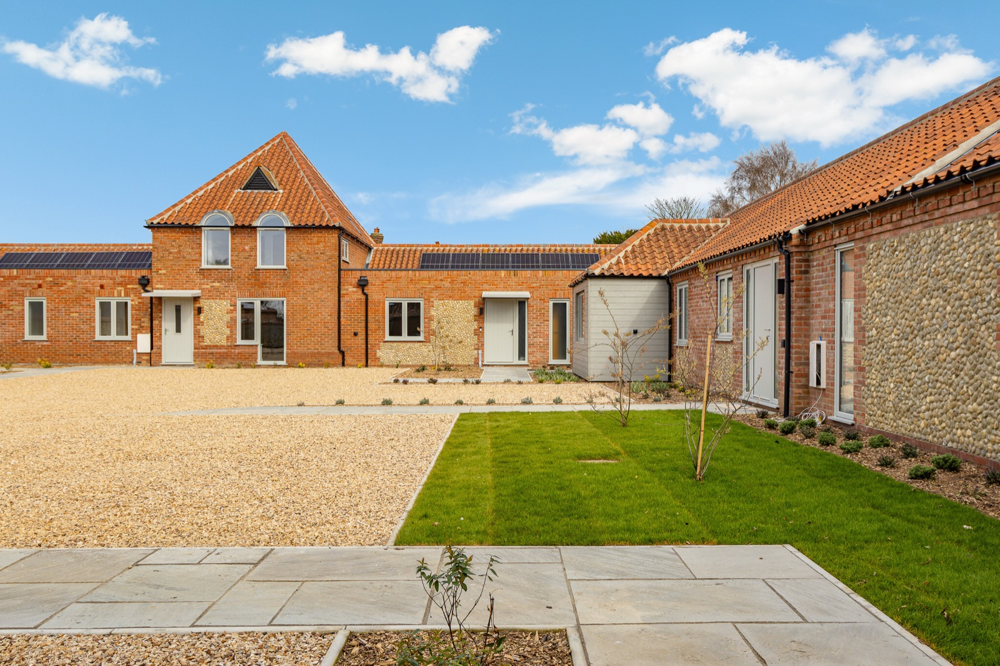
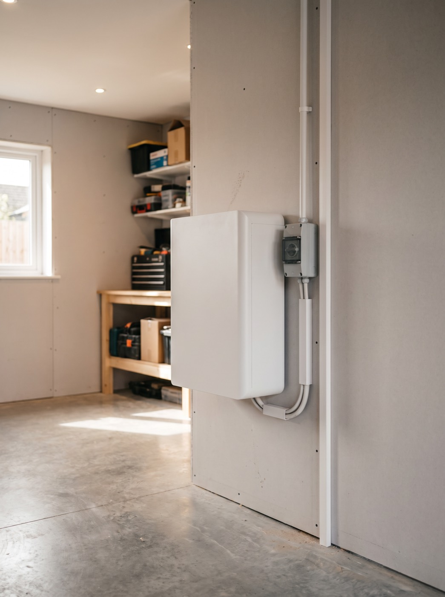
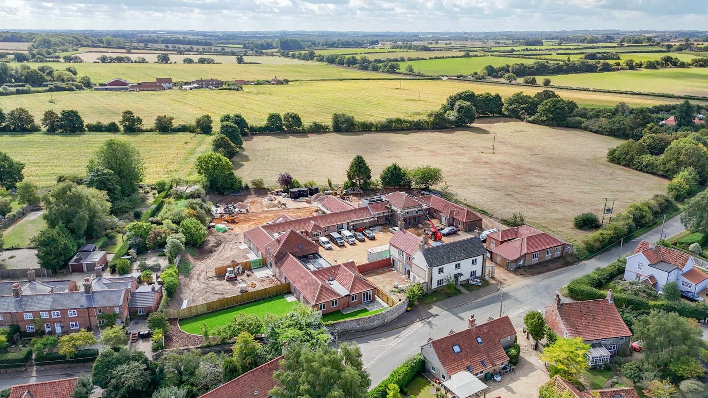

Rising costs were squeezing the sustainability ambition on a project built around it. The fix was not a cheaper specification, it was a different way of paying for the one they wanted.
The developer
Zero In Developments is a privately owned developer based in the South East, founded by Sam Fryer and Jed Jordan. It finds disused commercial and light industrial buildings and converts them into homes, reusing existing structures to hold down embodied carbon. The approach pairs a fabric first design philosophy with efficient systems and on site renewables.
“Our ambition from day one has been to deliver homes that are genuinely built for the future, not just ticking a box on sustainability.” Sam Fryer, Zero In Developments
The project
Lower Farm Mews is a private development of nine three and four bedroom homes in the village of Tittleshall, Norfolk. The site is a conversion of the former Courtenay House, a disused care home, where the shell of the original building was retained and the internals completely reconfigured. The homes are all electric, with air source heat pumps, EV charging points and repurposed building materials. Solar was always part of the plan.
“The numbers were forcing us into compromises we really did not want to make. We were looking at delivering a good product, but not the exceptional one we had promised ourselves and our buyers.” Jed Jordan, Zero In Developments
The solution
Site assessment first
Gryd ran an initial site assessment to determine the optimal configuration for each of the nine plots and to model energy performance and financial benefit for the future homeowners. The result was better performance than had been planned, with nothing added to the project cost.
Late stage integration
Gryd usually joins at design stage. Here the developer had already contracted a solar installer against a previous design and works were weeks from starting. Rather than disrupt the programme, Gryd worked with Zero In Developments and their installer, Array Electrics, to redesign the specification and plan delivery around the existing schedule.
From solar only to solar plus storage
- 10 kWh of battery storage in every home, previously written off as unaffordable
- More solar panels per plot, sized to each roof orientation and capacity
- Smart monitoring and control for live performance tracking



Navigating complexity
The main contractor went into administration, which nearly ended the project. Sam and Jed acquired the contractor and retained the workforce, so work continued after a brief pause. Gryd stayed committed throughout and worked flexibly around the disruption.
The grid connection was the second obstacle. After a long stretch of uncertainty over the date, Gryd went directly to the distribution network operator responsible for the works, and pressure from both sides brought the connection forward.
The third was rural connectivity. Tittleshall sits in a mobile data black spot, and Gryd systems need a data connection for monitoring. Systems were connected to the construction team's broadband where in range, and each will transfer to the homeowner's own broadband on sale, with no extra hardware.
The impact
For the developer: around £100,000 of solar and battery hardware at zero cost, EPC A across all properties, stronger sustainability credentials to market than the original ambition, and support from site assessment through to commissioning.
For homeowners: up to around 70% of the home's energy generated and stored on site, up from an around 20% solar only plan, 10 kWh of storage so daytime generation is available in the evening, the choice to subscribe at a fixed monthly fee or buy outright, and estimated lifetime energy savings of £30,000 to £40,000 per home.
The site is nearing completion with one property sold and occupied and two more reserved. One buyer purchased the system outright, planning to stay long term. Two chose to subscribe, already at their maximum mortgage threshold and preferring a fixed low monthly payment with no upfront cost.
“We are not a bolt on at the end of a project. We become part of the team, working through the same challenges.” Mohamed Gaafar, Co Founder and CEO, Gryd

Project details
- Developer
- Zero In Developments
- Project
- Lower Farm Mews, Tittleshall, Norfolk
- Type
- Conversion, 9 residential units
- Hardware value
- Around £100,000
- Storage per home
- 10 kWh
- Installer
- Array Electrics